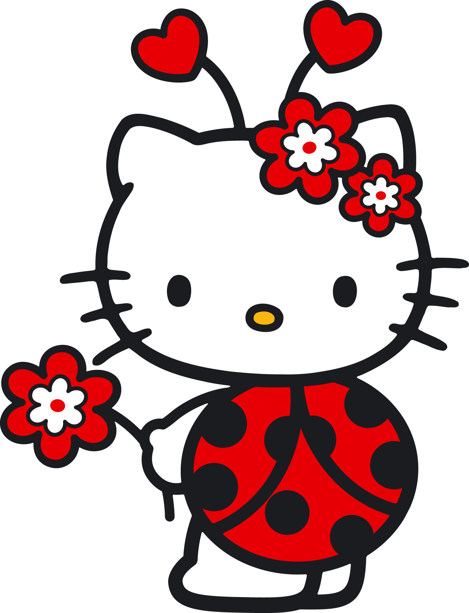
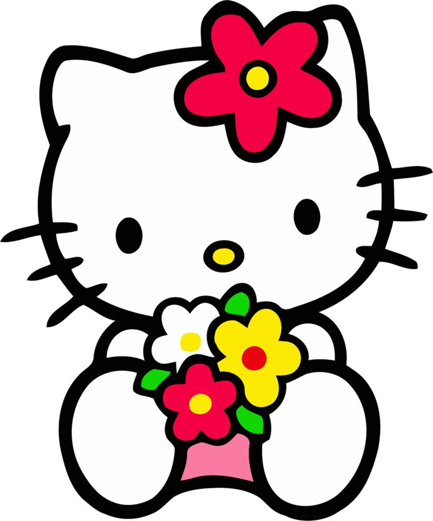

Hello Kitty is not a cat. She’s a girl called Kitty White. Confused? We are too.
The revelation comes from Sanrio, the creators of the international toy, who contacted University of Hawaii anthropologist Christine R. Yano who was putting together a 40th anniversary retrospective of Hello Kitty in Los Angeles. Professor
Yano, speaking to the LA Times, said: “That's one correction Sanrio made for my script for the show. Hello Kitty is not a cat. She's a cartoon character. She is a little girl. She is a friend. “But she is not a cat. She's never depicted on
all fours. She walks and sits like a two-legged creature. She does have a pet cat of her own, however, and it's called Charmmy Kitty." According to the official Hello Kitty homepage, Kitty White was born in London on 1 November, and is ‘a
cheerful and happy little girl with a heart of gold.’ She was born in England, Yano says, because of the culture during the 1970s: "Hello Kitty emerged in the 1970s, when the Japanese and Japanese women were into Britain".
The question is:
- Why?
- Чому?
- Почему?
- なぜ
To answer the question:
- Read below
- Читай нижче
- Читай ниже
- 以下を読む
Article

"They loved the idea of Britain. It represented the quintessential idealized childhood, almost like a white picket fence.
"So the biography was created exactly for the tastes of that time." Since her creation in 1974, Hello Kitty has become
a global figure worth an estimated $7 billion to Sanrio.
Hello Kitty 3D design
It's not the first time there have been doubts raised about who, or what exactly, a cartoon character is. In the 1990s there was discussion surrounding Goofy.
As much of the internet predictably exploded in shock at the news Kitty was not a cat, there was some good news as Peanuts confirmed that Snoopy,
the world’s favourite dog, is thankfully a dog.
Interesting facts
| HK made her debut in 1974 | HK became available in the States in 1976 |
|---|---|
| HK has no mouth, the reason, according to Sanrio | Her full name is actually "Kitty White." |
| She's a Japanese bobtail cat | Her birthday is November 1st, making her a Scorpio |
|

|

|